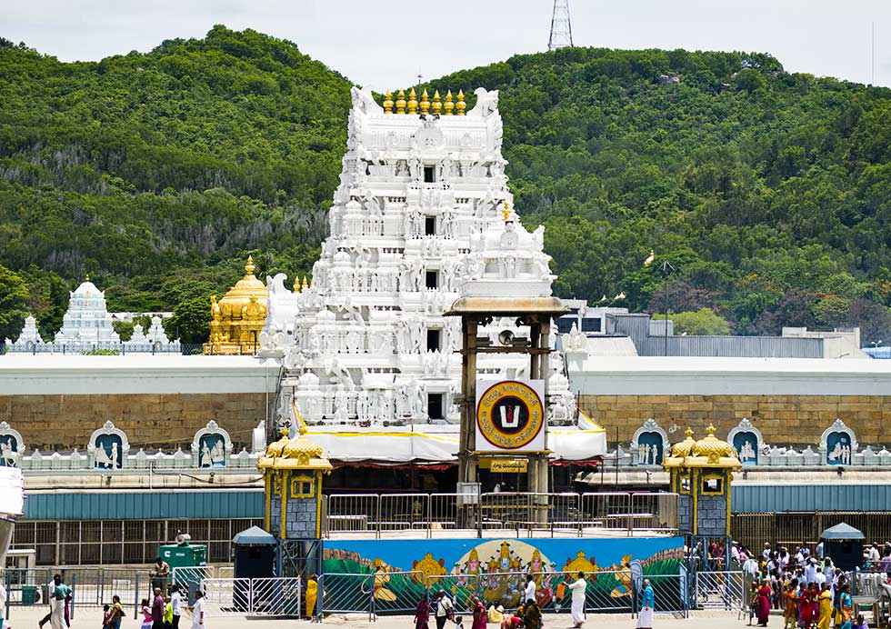

Top Places to Visit in Andhra Pradesh

Tirupati
One of the most visited spiritual destinations in the world, home to Lord Venkateswara Temple.

Araku Valley
A scenic hill station surrounded by coffee plantations and waterfalls.

Vizag (Visakhapatnam)
Known for its pristine beaches, submarine museum, and Kailasagiri hilltop views.
Lepakshi
Famous for its ancient temple architecture, hanging pillar, and mural paintings.